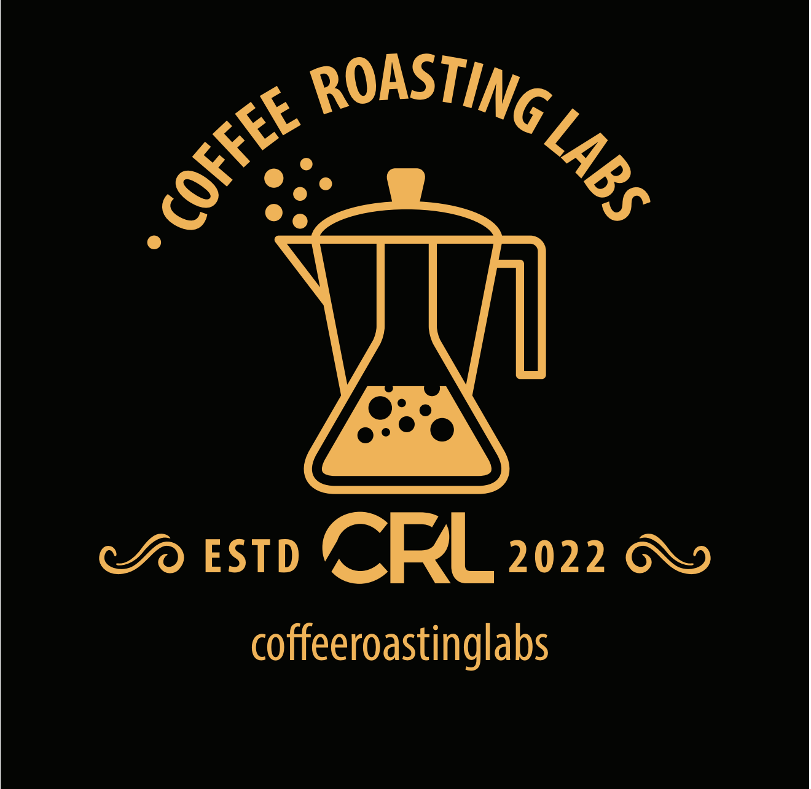

TOSTADURÍA ERIK BERWART ARAYA EIRL
Nombre de fantasía: Coffee Roasting Labs
RUT: 77.586.349-8 · Fono / WhatsApp: +56 9 2372 1634
Arriendo de equipo espresso profesional + asesoría + gestión de insumos de barra
Santiago, 26 de agosto de 2026
Estimados(as):
Por medio de la presente, Tostaduría Erik Berwart Araya EIRL (nombre de fantasía Coffee Roasting Labs) tiene el agrado de presentar su propuesta comercial para el arriendo de una barra espresso profesional Nuova Simonelli, acompañada de asesoría técnica-operativa y de la gestión de insumos de barra que el Cliente deberá adquirir para operar correctamente el equipo (entre ellos, tamper y Cafiza).
La presente oferta se estructura en cuatro secciones: (1) paquete de equipos, (2) referencias de mercado en Chile, (3) condiciones comerciales de esta propuesta, y (4) comparativo y alcance del servicio.
Se pone a disposición del Cliente, en modalidad de arriendo, el siguiente set profesional:
| Ítem | Descripción | Valor referencial de mercado (compra) |
|---|---|---|
| Máquina espresso | Nuova Simonelli Appia Life — 1 grupo (semiautomática / volumétrica según stock) | ≈ $3.856.000 IVA incl. |
| Molino | Nuova Simonelli MDX / MDXS (dosificador u on demand, según acuerdo) | ≈ $1.080.000 – $1.535.100 IVA incl. |
| Valor total del activo | ≈ $4.940.000 – $5.390.000 IVA incl. |
Uso recomendado: cafetería de formato compacto, restaurant, hotel boutique u oficina con barra barista (referencia de operación: 80 a 150 tazas/día).
Requisitos técnicos a cargo del Cliente:
Los valores de compra indicados corresponden a referencias públicas de distribuidores en Chile (Cafestore, Café Altura y equivalentes) y se incluyen solo a modo de contexto del activo arrendado; no constituyen precio de venta.
Para contextualizar esta oferta, se consideran rangos publicados por empresas que operan arriendo y/o comodato de café en el país:
| Empresa / fuente | Modalidad | Rango referencial |
|---|---|---|
| La Finca | Comodato espresso / grano automático | Desde ≈ $399.990 / mes (consumo mínimo de insumos) |
| Nolichile | Arriendo profesional alta capacidad | ≈ $280.000 – $600.000 / mes (equipo; café aparte) |
| Nolichile | Comodato oficina | Mínimos típicos 4–8 kg o 12–25 kg café / mes, según tamaño |
| MiTTantó | Arriendo vending de grano | Desde ≈ $250.000 / mes (segmento automático / vending) |
| Corporate Coffee | Comodato / arriendo / compra | Máquina en comodato a cambio de consumo mínimo |
Café en grano (referencia mayorista / plan): selección ≈ $14.000–$28.000 / kg; especialidad ≈ $28.000–$45.000 / kg.
Respecto de esos rangos, la presente propuesta ofrece un arriendo de equipo significativamente más competitivo, complementado con asesoría y con la gestión de insumos de barra que el Cliente debe comprar para operar el set.
| Condición | Detalle |
|---|---|
| Arrendador | Tostaduría Erik Berwart Araya EIRL — Coffee Roasting Labs · RUT 77.586.349-8 |
| Modalidad | Arriendo de Appia Life 1 grupo + molino MDX/MDXS |
| Cuota mensual | $150.000 (ciento cincuenta mil pesos chilenos) + IVA |
| Inicio de cobro | A contar del 1 de enero de 2027 (año próximo) |
| Duración del contrato | 12 meses (un año), contados desde la fecha de inicio de cobro |
| Renovación | De común acuerdo, por escrito, antes del vencimiento |
| Contacto | +56 9 2372 1634 |
Durante la vigencia del contrato, Coffee Roasting Labs entregará asesoría orientada a la correcta operación de la barra, que podrá incluir, según necesidad del Cliente:
La asesoría no reemplaza el servicio técnico correctivo mayor ni el reemplazo de piezas por mal uso, los que se cotizarán por separado cuando corresponda.
Para operar y mantener el equipo en condiciones adecuadas, el Cliente deberá adquirir por su cuenta (es decir, comprarlos ellos) al menos los siguientes insumos de barra:
| Insumo | Descripción / uso |
|---|---|
| Tamper | Herramienta de prensado profesional compatible con el portafiltro del equipo |
| Cafiza (o equivalente Urnex Cafiza) | Detergente profesional para backflush y limpieza de grupo |
| Otros insumos de barra | Según necesidad operativa (ej.: detergente de leche, cepillos, jarras, filtros, etc.) |
Gestión por parte de Coffee Roasting Labs:
Incluye:
No incluye (salvo acuerdo escrito en contrario):
Si el Cliente solicita el término del contrato antes del cumplimiento de los 12 meses, deberá pagar una penalización equivalente a 3 (tres) cuotas mensuales de arriendo, esto es:
Dicha penalización es independiente de:
El retiro del equipo se coordinará dentro de un plazo razonable una vez pagadas las obligaciones pendientes.
| Concepto | Mercado referencial (Chile) | Esta propuesta — Coffee Roasting Labs |
|---|---|---|
| Arriendo / pack espresso profesional | ≈ $280.000 – $600.000 / mes, o comodatos desde ≈ $400.000 / mes en insumos | $150.000 / mes desde ene-2027 |
| Plazo típico | 12 a 36 meses | 12 meses |
| Salida anticipada | Suele ser % de cuotas restantes o cláusulas equivalentes | Penalización fija: 3 cuotas ($450.000 + IVA) |
| Diferencial | Solo equipo o solo consumo de café | Equipo + asesoría + gestión de insumos de barra (tamper, Cafiza, etc.), de cargo del Cliente |
| Concepto | Monto |
|---|---|
| Arriendo anual (12 × $150.000) | $1.800.000 + IVA |
| Insumos de barra (tamper, Cafiza y otros) | De cargo del Cliente (pueden gestionarse a través de Coffee Roasting Labs) |
| Penalización por salida anticipada | $450.000 + IVA (solo si aplica) |
Con esta estructura, el Cliente obtiene:
La presente carta-propuesta tiene una vigencia de 30 días corridos desde su fecha de emisión, salvo prórroga escrita. Los valores están expresados en pesos chilenos y se entienden más IVA, salvo que se indique expresamente lo contrario.
La aceptación de esta propuesta se formalizará mediante contrato de arriendo y anexos de inventario e insumos, los que prevalecerán en caso de diferencia de interpretación.
Sin otro particular, quedamos atentos a sus comentarios para ajustar cobertura geográfica, fecha exacta de instalación y la gestión del pedido inicial de insumos (tamper, Cafiza y complementos).
Atentamente,
Anexos sugeridos al firmar (no incluidos en esta carta):